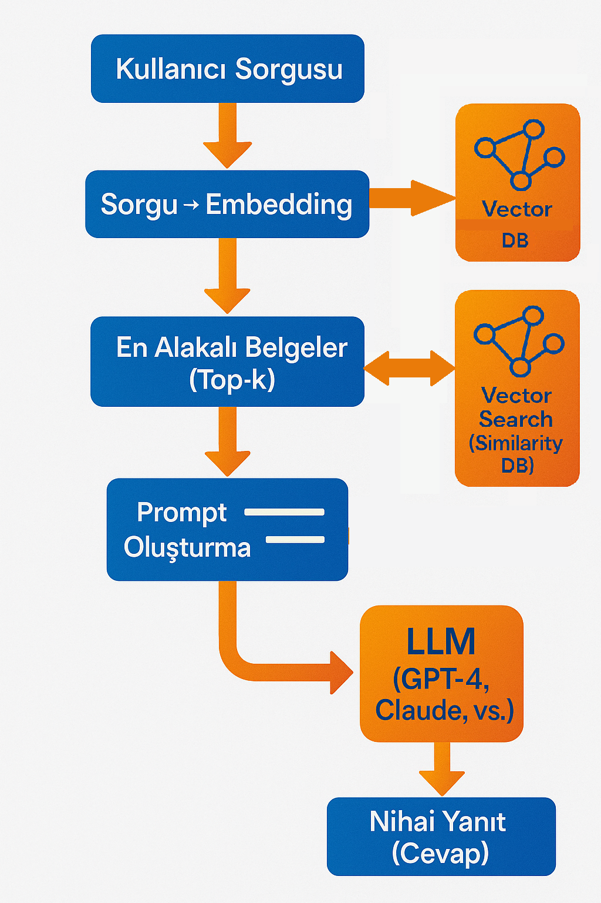
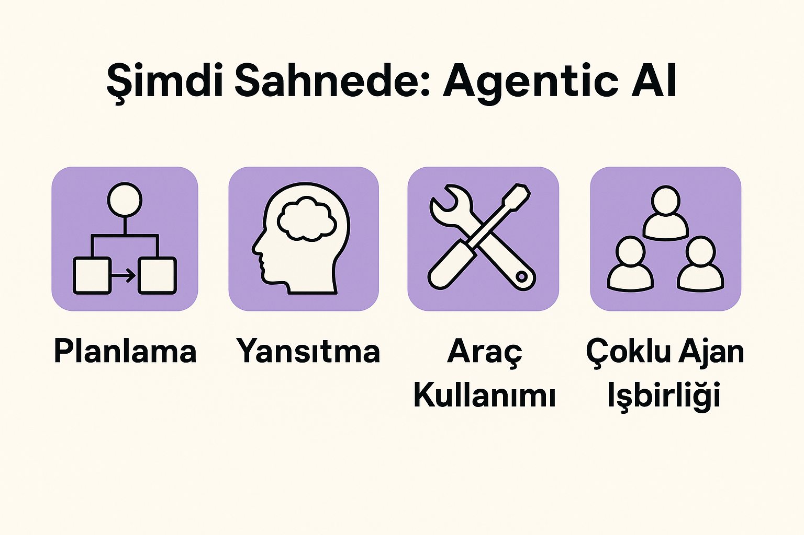

Sesli Dinle
Büyük Dil Modelleri (LLM)
Yapay zekâ modelleri başlangıçta oldukça basitti: Biz bir şey yazdığımızda o da bize cevap veriyordu. Bu sistemler “dil modeli” olarak bilinir ve temel olarak şu şekilde çalışırlar: Kendilerine verilen büyük miktarda metin verisi üzerinde eğitilirler ve her defasında bir sonraki kelimeyi tahmin ederek cümleler kurarlar.
Bu modeller devasa metin kütüphaneleri üzerinde iki aşamada eğitilir:
Pretraining (Ön Eğitim): İnternetten ve kamuya açık kaynaklardan elde edilen büyük veri setleriyle, “gelecek kelime ne olabilir?” sorusu üzerinden eğitim yapılır.
Posttraining (Son Eğitim): Bu aşamada model, daha kullanışlı hale gelmesi için talimatlarla eğitilir (instruction tuning) ve insan geri bildirimleriyle pekiştirme öğrenmesi (RLHF) uygulanır.
Büyük dil modelleri, zamanla çok daha iyi hale geldiler. Artık kod yazabiliyor, içerik oluşturabiliyor, belgeleri özetleyebiliyor ya da müşteri hizmetlerinde destek sağlayabiliyorlar. Ama hâlâ kendiliklerinden bir şey yapamıyorlar. Yani, kendi başlarına bir hedef belirleyip harekete geçemiyorlar.
Geleneksel Dil Modellerinin Sınırları
Günümüz büyük dil modelleri (ChatGPT, Claude, Gemini gibi) hâlâ ağırlıklı olarak girdi → çıktı sistemleridir. Yani, kullanıcının yazdığı metne tepki verirler; plan yapmaz, amaç gütmez ve birden fazla adımı koordine etmezler.
Başlıca genel sorunları da şunlardır:
Halüsinasyon: Yani bazen gerçekle ilgisi olmayan şeyler uydurabilirler.
Güncellik sorunu: Eğitildikleri veri sınırlı olduğu için, bazıları internete bağlı olmadığından güncel bilgiye ulaşamaz.
Kaynak belirtmeme: Verdikleri bilginin nereden geldiğini çoğu zaman bilemeyiz.
Kapsam sınırı: Çok uzun belgelerle baş etmekte zorlanırlar.
Gizlilik riski: Kamuya açık verilerle eğitildikleri için, hassas kurumsal verilerle doğrudan çalışmak riskli olabilir.
İşte bu problemleri aşmak için son yıllarda geliştirilen en etkili yöntemlerden biri: RAG, yani Retrieval-Augmented Generation (Bilgi Erişimli Yanıt Üretimi)’dır.
RAG: Dil Modelini Gerçek Bilgiyle Buluşturmak
RAG sistemi, dil modelinin dışarıdan bilgi almasını sağlar. Yani, modelin ezbere, kendi eğitim gördüğü veri ile cevap vermesi yerine, gerçekten “bilerek” cevap vermesini sağlar.
RAG, temel olarak iki ana bileşeni birleştirir:
Bilgiye erişim (Retrieval) : Soruya uygun bilgi, bir doküman havuzundan ya da vektör veritabanından alınır.
Yanıt üretimi (Generation): Elde edilen bilgilerle, model tarafından bir yanıt oluşturulur.
Örneğin, bir çalışanın “ABC ürününün iade politikası nedir?” sorusunu ele alalım. Model, önce bu soruyu anlayıp ilgili belgeleri (örneğin şirket içi dokümanları) arar, en uygun olanları seçer ve ardından bu içeriklere dayanarak cevap verir. Yani model artık sadece eğitim aldığı veriye bağlı değil; gerçek, güncel ve bağlamsal bilgiye dayanarak cevap verir.

1. Adım : Bilgi Kaynaklarının Hazırlanması
🔹 1.1 – Dokümanları Embedding’e Çevirme.
Şirket belgeleri, sıkça sorulan sorular, ürün bilgileri gibi metinler alınır.
Bu metinler önce parçalara (chunk) bölünür.
Her bir parça, bir text embedding model (örn. OpenAI, Hugging Face, Cohere) kullanılarak bir vektöre (sayısal temsil) dönüştürülür.
Örneğin: “Ürün X, 30 gün içinde iade edilebilir.” → [0.12, -0.84, 1.43, …]
🔹 1.2 – Vektör Veritabanına Kaydetme.
Bu vektörler bir vektör veritabanına (örn. Pinecone, FAISS, Chroma, Weaviate) kaydedilir.
Amaç, sonradan yapılacak aramalarda, en yakın anlamda benzer içerikleri hızlıca bulabilmektir.
2. Adım : Soru Geldiğinde – Sorgulama ve Geri Getirme (Retrieval)
🔹 2.1 – Soru Embedding’e Çevrilir.
Kullanıcıdan gelen soru (örneğin: “İade süresi ne kadar?”), yine aynı embedding modeliyle bir vektöre dönüştürülür.
🔹 2.2 – Vektör Araması Yapılır.
Soru vektörü ile daha önce kayıtlı doküman vektörleri karşılaştırılır.
Benzerlik ölçütü olarak genelde cosine similarity kullanılır.
En benzer olan top-k döküman parçaları seçilir (örneğin en alakalı 3-5 sonuç).
3. Adım : Üretim (Generation)
🔹 3.1 – Dil Modeli İçin Prompt Hazırlanır.
Elde edilen doküman parçaları, orijinal kullanıcı sorusuyla birlikte bir prompt (girdi) halinde dil modeline verilir.
Bağlam: - “Ürün X, 30 gün içinde iade edilebilir.” Soru: - “Ürün X’in iade süresi nedir?”
🔹 3.2 – LLM (GPT, Gemini, Claude, Mistral vs.) Cevap Üretir.
Model bu bilgileri kullanarak, daha güvenilir ve doğru bir cevap üretir:
“Ürün X satın alındıktan sonra 30 gün içinde iade edilebilir.”
✅ RAG’in Faydaları:
Daha doğru sonuçlar alınabilir.
Kurum içi özel bilgilerle çalışılabilir.
Halüsinasyon oranı düşer.
Modelin neye dayanarak cevap verdiği görülebilir.
💼 Kullanım Senaryoları:
Kurumsal bilgi botları.
Hukuki belge özetleyiciler.
Sağlık danışmanlığı.
Müşteri destek yardımcıları.
Akademik araştırma özetleme araçları.
Agentic AI Nedir?
Buraya kadar bahsedilenler, veriyle güçlendirilmiş ancak hâlâ tepkisel sistemlerdir. Agentic AI, bunun ötesine geçer.
Agentic AI; kendi başına hareket edebilen, planlama yapabilen, araç kullanabilen ve hatta kendi kendini geliştirebilen bir yapay zekâdır.
Agentic AI, dil modellerinin aracıları (agents) olarak çalıştığı bir yapıdır.
Bu yeni nesil yapay zekâ sistemlerinin temel özellikleri dört ana başlık altında toplanabilir:

Planlama: Agentic AI, sadece verilen bir komutu yerine getirmekle kalmaz, aynı zamanda bu komutun en etkili şekilde nasıl gerçekleştirileceğini adım adım planlayabilir. Kullanıcının amacını analiz eder, ara hedefler belirler ve bu hedeflere ulaşmak için stratejik bir yol haritası oluşturur.
Yansıtma (Reflection): Bu sistemler, çıktılarının kalitesini değerlendirme ve gerektiğinde kendi yanıtlarını gözden geçirip düzeltme yeteneğine sahiptir. Bu da onlara daha güvenilir ve tutarlı olmalarını sağlayan bir özeleştiri mekanizması kazandırır.
Araç Kullanımı: Agentic yapay zekâlar, dış dünya ile etkileşim kurmak için araçlara erişebilir. Örneğin, bir API üzerinden gerçek zamanlı veri çekebilir, bir veritabanından bilgi sorgulayabilir ya da hesaplama yaparak kullanıcıya sonuç sunabilir. Bu yönüyle yalnızca konuşan bir modelden çok daha fazlasıdır.
Çoklu Ajan İşbirliği: Agentic sistemler, görevleri farklı rollere ayırarak birden fazla yapay zeka ajanının birlikte çalışmasını sağlayabilir. Her bir ajan özel bir görevi üstlenirken, sistem genel hedefe ulaşmak için bu ajanların çıktılarını koordine eder. Bu işbirliği, karmaşık iş süreçlerinde büyük avantaj sağlar.
Agentic AI bu özellikleriyle, geleneksel dil modellerinden farklı olarak daha otonom, daha esnek ve çok daha etkili çözümler üretebilen yeni bir paradigma sunar.
Gerçek Dünyada Agentic AI Nerelerde Kullanılabilir?
Bir müşteri destek sistemi, kullanıcının sorusunu alır, ilgili iç veriyi bulur, müşteri hesabına erişip geçmiş işlemleri kontrol eder ve doğrudan çözüm üretir.
Bir yazılım geliştirme ajanı, siz kodda bir hata buldunuz diye ona söylersiniz; o gider hatayı analiz eder, düzeltir, gerekirse yeni bir sürüm oluşturur ve GitHub’a PR açar.
Bir araştırma ajanı, sizin için belirli bir konu hakkında en güncel bilgileri internetten tarar, akademik makaleleri özetler ve bir sunum hazırlar.
Ve tüm bunlar sizin tek bir satır yazmanızla mümkün olabilir.
Bu Sistemler Nasıl Test Ediliyor?
Bu kadar karmaşık bir sistemin doğruluğunu test etmek hiç de kolay değil.
Bu yüzden klasik “model doğru mu cevap verdi?” kontrolü yerine, artık daha yaratıcı yöntemler kullanılıyor:
Modelin kendi çıktısını tekrar değerlendirip “daha iyisini yapabilir miyim?” demesi.
Gerekirse kendi kendini “eleştirmesi”.
Bir görev için birden fazla ajan oluşturulması (biri araştırır, biri değerlendirir, biri raporlar).
Böylece daha sağlam, tutarlı ve güvenilir sistemler ortaya çıkıyor.
Nereden Başlamalı?
Eğer siz de bu dünyaya adım atmak istiyorsanız;
1. Küçük başlayın: Önce bir dil modeliyle basit soruları cevaplayarak başlayın. Bunun için LLM sağlayıcılarının sunduğu playground ortamlarında küçük denemeler yapın.
2. Araçları keşfedin: LangChain, LlamaIndex gibi açık kaynaklı sistemlere göz atın.
3. Prototipleyin: Basit bir müşteri destek ajanı ya da belge özetleyici tasarlayın.Deneme → Geri Bildirim → Geliştirme döngüsünü sık sık tekrarlayın.
4. Güvenliğe dikkat edin: Girdi-çıktı denetimi ve veri gizliliğine dikkat edin.
Sonuç: Agentic AI Neden Önemli?
2025 yılı itibarıyla yapay zekâ dünyasında en çok konuşulan konu açıkça Agentic AI oldu. Bu teknoloji artık sadece yazılımcılar ve araştırmacılar arasında değil; şirket yöneticilerinin toplantılarında, ürün ekiplerinin planlarında ve hatta devletlerin teknoloji politikalarında bile ön sıralarda yer alıyor. Agentic AI, herkesin dikkatini çeken ve yapay zekâ alanında yönü belirleyen en önemli gelişme hâline geldi.
Agentic AI, yapay zekânın “pasif yardımcı” döneminden, “aktif iş ortağı” dönemine geçişini temsil ediyor. Bu modeller artık yalnızca gelen girdilere yanıt veren sistemler değil; hedef belirleyebilen, plan yapabilen, karar verebilen, dış dünyayla etkileşime girebilen ve gerektiğinde kendi çıktısını değerlendirip düzeltebilen yapılar hâline geldi.
Bu değişim, yapay zekânın kullanım biçimini kökten dönüştürüyor. Daha önce yalnızca rehberlik eden modellerin yerini, şimdi görevleri üstlenen ve baştan sona sonuç üretebilen akıllı ajanlar alıyor. Bu, sadece üretkenliği artırmakla kalmıyor; aynı zamanda karmaşık süreçlerin otomasyonu, kişiselleştirilmiş hizmetler, dinamik karar destek sistemleri gibi pek çok yeni olanak da sunuyor.
2025’in ajandasında Agentic AI’ın bu hızlı yükselişi, bireylerin günlük yaşamından büyük kurumsal sistemlere kadar her alanda etkisini daha fazla hissettirmeye başladı. Şirketler artık yalnızca “bir dil modeli nasıl entegre edilir?” değil, “hangi süreçler otonom ajanlara devredilmeli?” sorusunu soruyor.
Ancak bu yükselişin beraberinde getirdiği sorumluluklar da var. Agentic sistemlerin etik sınırlar içinde kalması, güvenli çalışması ve insanlar üzerinde kontrolü devralmaktan ziyade onları desteklemesi gerekiyor. Bu yüzden kullanım kılavuzu, yönetişim politikaları ve denetim mekanizmaları da bu dönüşümün ayrılmaz bir parçası olmalı.
Kısacası, Agentic AI, yapay zekânın sadece bir teknoloji değil, bir çalışma arkadaşı, bir stratejik danışman ve hatta bir çözüm ortağı olabileceğini gösteriyor. Onunla ne kadar erken ve bilinçli bir şekilde tanışırsak, bu dönüşümden o kadar fazla fayda sağlayabiliriz.